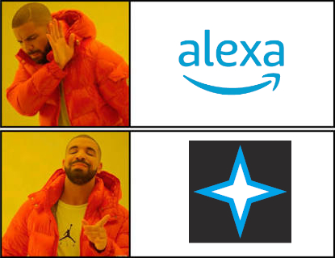

Projects - Vega |
Vega is the name of my personal assistant. It doesn't do all that much at the moment, but eventually I hope it will be just as, or better than, all the other assistants on the market like Alexa and Siri.
Vega is the result of a lot of playing around with different programming languages throughout the years. I named it a lot of things, in that time too.
My first assistant was called Intellia, and really wasn't as intelligent as its name suggests. It was written in Visual Basic, and I made about three versions of it. Ultimately, it died when the computer I had it on started going faulty.
My second assistant was called Corbo, and also wasn't that smart. I created four versions of it, one in Visual Basic and the other three in C#. It met a similar fate to Intellia, being wiped out when my computer blew a fuse and completely packed in. R.I.P.
My third assistant didn't really have a name, unless you want to call it "Default". It was a lot smarter, and far more useful than its predecessors. Its biggest features were plugins, and being able to change its name. That being said, the implementation was sloppy, and plugins broke very easily. Plus, a change to the way the C# compiler built into C# worked kind of broke it. So Default went down as a reasonably successful experiment.
And finally, that brings us to Vega. What form will Vega ultimately take? Hopefully not too much like this guy...
There are a lot of personal assistants on the market: Siri, Alexa, Cortana, Google, etc. If I were to ever release Vega into the commerical market, it would need something about it that makes it special.
One of my biggest issues with most asssistants is their insatiable hunger for personal data. This is something I do not want Vega to be. The modern world runs on people's data, and it's a scary thing. Having an assistant out there, for people who don't want Amazon knowing everything about them, is something the world needs.
Of course privacy wouldn't be the only selling point. Every other assistant lacks something: personality. When you ask them the same question twenty times in a minute, they always give the same answer. I want Vega to be able to answer differently, based on previous interactiosn and external circumstances.
My other ideas are similar to my old assistant, Default. Being able to change the assistant's name would give it a personal touch. Plus, being able to add plugins would mean the sky is the limit for its functionality.
It's all well and good dreaming about all of these features, but ultimately Vega will take a long time to get right. Only time will tell what the final product is. In the meantime, I made a cool logo and a bad meme...
|  |